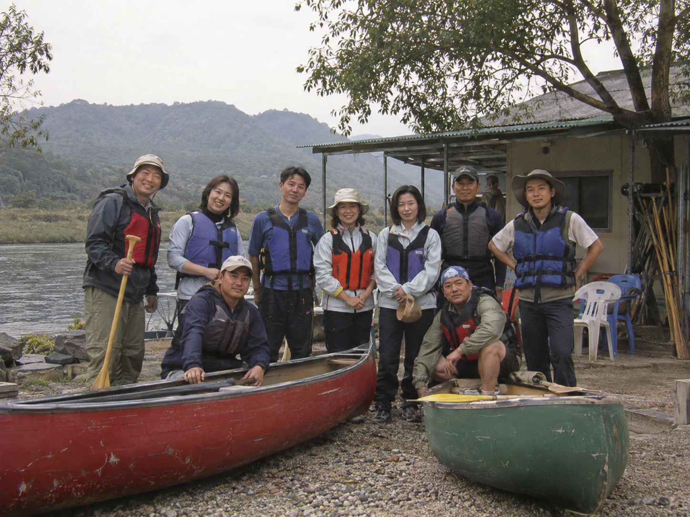
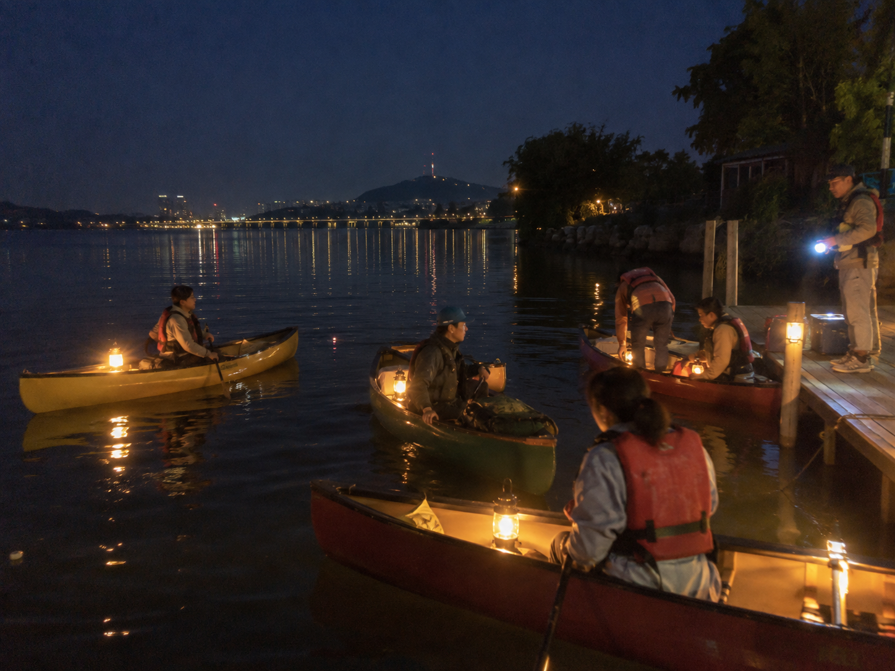
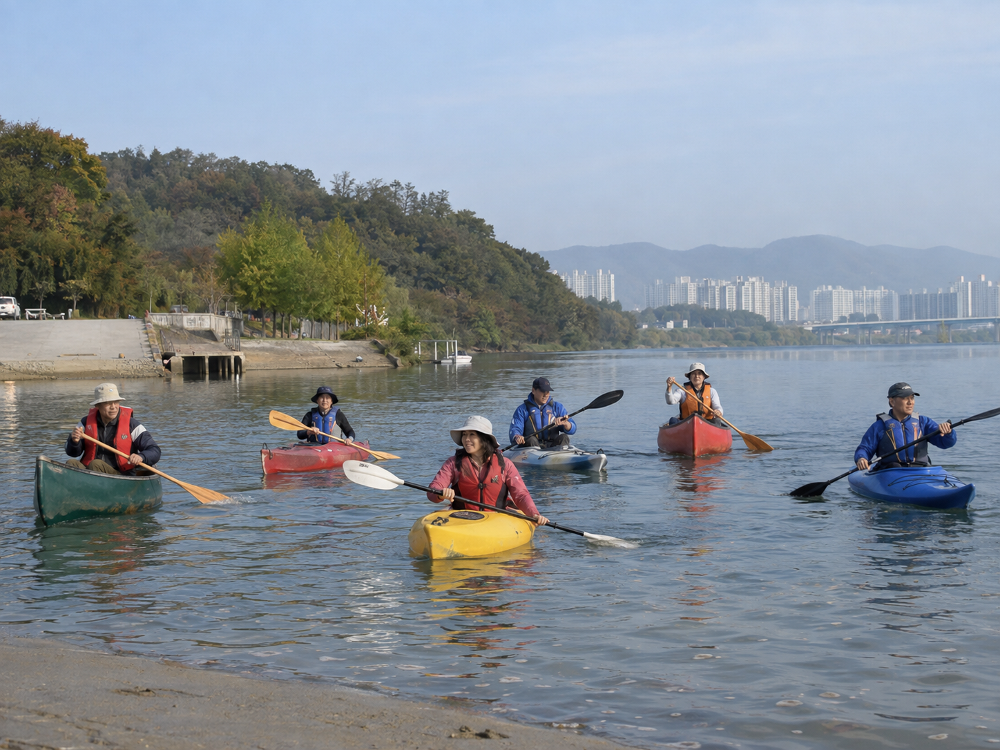
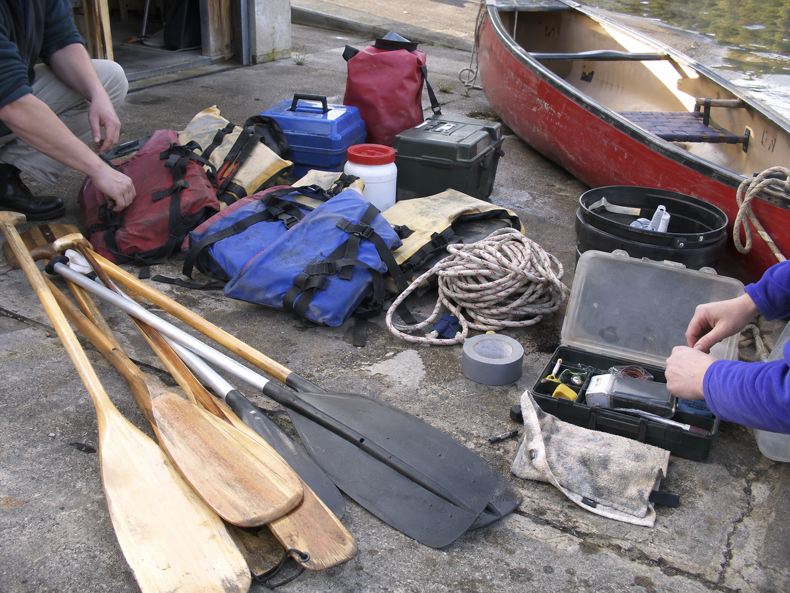
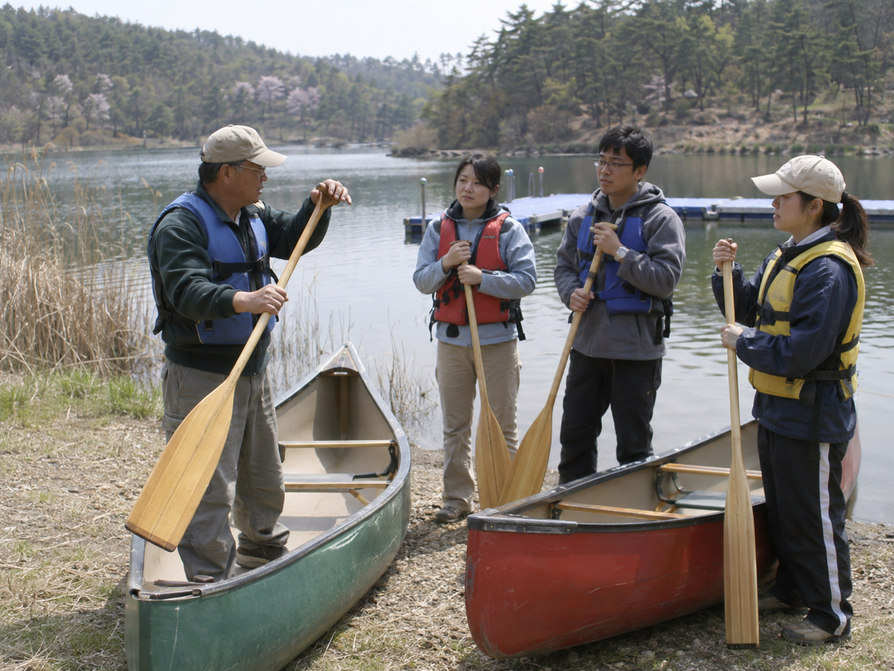

Jul i Dannevang · Pilen · Dömitz
10. 계절 연감·엽서형
옛 물 이야기, 국내 런치 포인트, 계절별 매력과 카누·카약 비교를 오래된 생활 연감처럼 구성.
샘플 열기 →동일한 가상 클럽 데이터와 사진첩을 사용하되, 레퍼런스의 비중과 정보 구조를 다르게 만든 비교용 정적 페이지입니다. 모든 후보의 메인 영역에는 2열 활동 갤러리가 들어가며, 10번은 기존에 없던 계절 연감·엽서 문법을 사용합니다.





옛 물 이야기, 국내 런치 포인트, 계절별 매력과 카누·카약 비교를 오래된 생활 연감처럼 구성.
샘플 열기 →